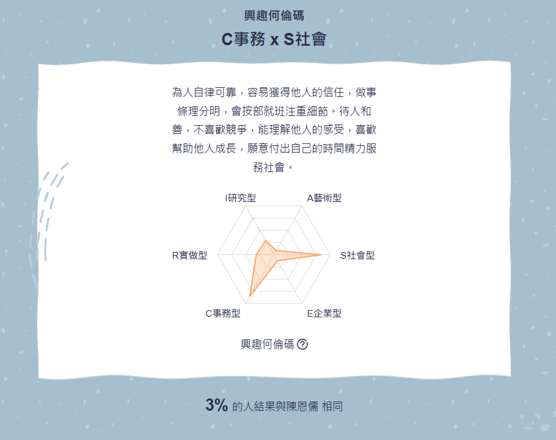
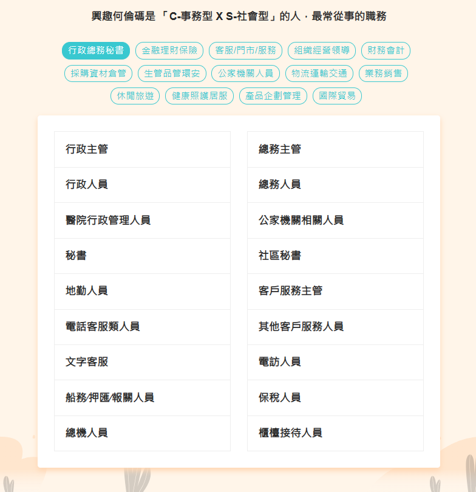

Holland 興趣測驗
Holland 興趣測驗將人與環境分成六大類型：R-實作型、I-研究型、A-藝術型、S-社會型、E-企業型及C-事務型。
每個人的興趣可以用一個「Holland Code」表示，通常由三碼組成（前兩碼最重要），反映你最突出的特質。
測驗專屬於你的Holland Code!
我的Holland Code類型為 : C事務 x S社會

我的興趣價值觀是「C 事務型 × S 社會型」，我喜歡按部就班的工作方式，重視結構與秩序，同時熱衷於與人互動，幫助他人成長。
我善於理解他人感受，願意付出時間服務他人，不喜歡競爭。雷達圖顯示我務實且以人為本，適合從事教育行政、非營利組織管理或醫療行政等工作。
只有 3% 的人和我有相似的興趣組合，這讓我在需要組織能力和人際互動的領域中能發揮獨特優勢，找到屬於自己的價值與滿足感。
Holland Code為 「C-事務型 X S-社會型」的人，最常從事的職務

圖表建議我適合從事醫療行政、公共機構關懷人員或社工人員等職業。
但我並不喜歡這些工作，因為我不喜歡醫療環境的壓力，也不擅長處理複雜的人際衝突，社工的繁重責任也讓我感到負擔。
我更希望找到能結合結構化工作與輕鬆人際互動的環境，例如小型團隊的行政支持，這樣我能發揮有條理的優勢，同時避免過多的情感負擔，找到更適合我的工作方式。